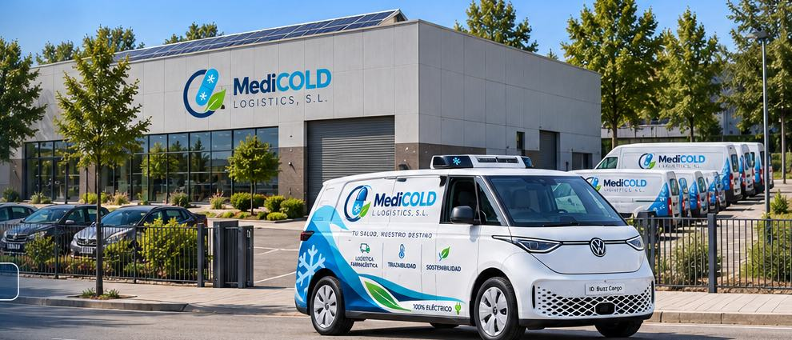
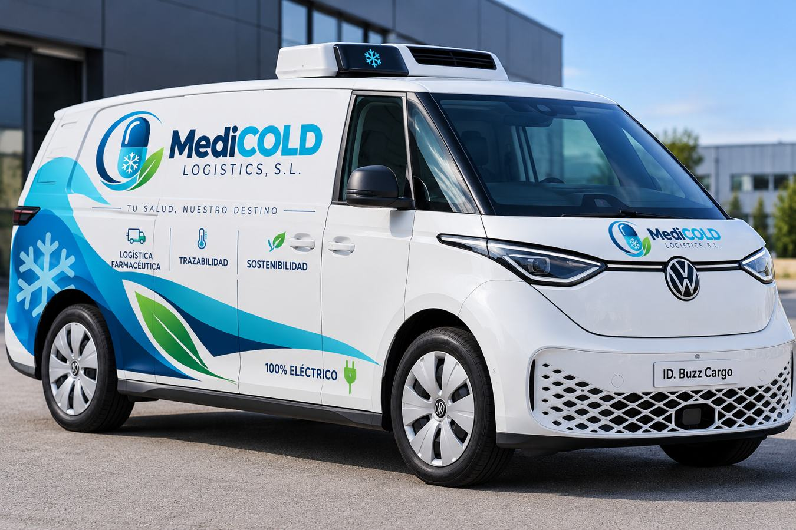

Presentamos nuestra propuesta de logística farmacéutica desde Gurb, en el corazón de Osona. Trabajamos para conectar el almacenamiento especializado con una distribución eficiente, segura y trazable.
❄️ Control de temperatura · 📦 Gestión logística · 🌱 Compromiso ambiental

Los comentarios no se envían ni se guardan.
MediCOLD Logistics, S.L.Operaciones · 2026
Dos condiciones de transporte, un mismo compromiso
Los medicamentos necesitan condiciones adecuadas a sus especificaciones. Por eso diferenciamos entre productos a temperatura ambiente controlada y productos refrigerados, con seguimiento de las condiciones de conservación durante el proceso logístico.
La calidad del servicio empieza por respetar las necesidades de cada producto.
Los comentarios no se envían ni se guardan.
MediCOLD Logistics, S.L.Sostenibilidad · 2026
Movilidad eléctrica para una distribución más eficiente
La Volkswagen ID. Buzz Cargo eléctrica forma parte de nuestra propuesta de distribución farmacéutica. La planificación de rutas en Osona y la movilidad eléctrica nos ayudan a integrar la sostenibilidad en las operaciones diarias.

Los comentarios no se envían ni se guardan.
MediCOLD Logistics, S.L.Tecnología · 2026
PharmaTrace: visibilidad a lo largo de la cadena logística
La trazabilidad permite consultar el estado de los envíos y los registros de temperatura. Con PharmaTrace integramos seguimiento de pedidos, identificación de rutas y control logístico en una misma experiencia.
MediCOLD Logistics, S.L. es una empresa especializada en el almacenamiento y distribución de productos farmacéuticos. Nuestra actividad se centra en la conservación adecuada de los medicamentos, la trazabilidad de los envíos y una distribución planificada desde Gurb hacia Osona.
Combinamos instalaciones logísticas, control de temperatura, organización de rutas y movilidad eléctrica para ofrecer un servicio orientado a la seguridad y la eficiencia.